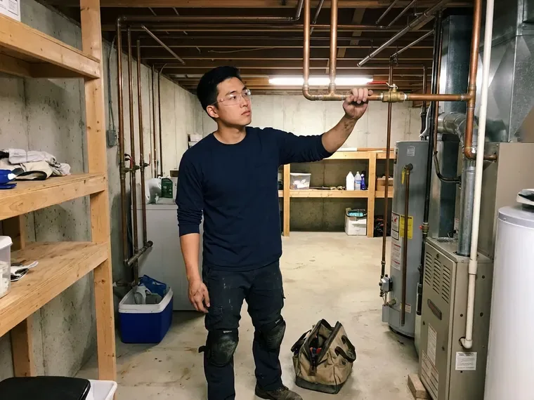

Grease Trap Repair in Petaluma, CA
A broken grease trap in Petaluma, CA can fail an inspection fast. We repair baffles, tees, lids and lines without shutting your kitchen down.
- Local Northern California Plumbers
- Upfront Pricing
- After-Hours Repairs
- Camera Line Inspections
Grease Trap Repair That Lasts in Petaluma, CA
Restaurant or home kitchen, we can usually be there the same day.
Grease Trap and Interceptor Repair in Petaluma, CA
FBL Plumbing gives restaurant owners a straight answer on repair versus replacement. Plenty of traps are worth repairing, and a few are past it. A rusted steel trap with holes in the body will not hold a patch for long, while a plastic unit with a broken baffle can run another ten years after a replacement baffle and an hour of labor. We show you what we found.
Our expertise includes:
- Repair or replace damaged interceptor baffles
- Restore spalled concrete interceptor walls
- Repair lids, gaskets and riser joints

Additional Kitchen Plumbing Services in Petaluma, CA
Our kitchen plumbing services in Petaluma, CA cover sinks, disposals, dishwashers, and grease traps so your kitchen keeps running without backups or leaks.



Customers
Why Choose FBL Plumbing for Grease Trap Repair in Petaluma, CA?
Every repair ends with a flow test. We fill the sinks, pull the plugs and watch what comes out the other side. If grease shows up downstream or the level behaves wrong, the job is not finished, and we keep working until the trap holds its grease cap and passes clear water out the outlet. After that, you get a written record.
- Longer Trap Life, Timely repairs keep a small failed part from taking the whole trap with it.
- Preventive Advice, We measure the trap and suggest a pumping schedule that fits your kitchen.
- Specialized Tools, Jetters and sewer cameras let us find the blockage and clear it instead of guessing.
Citywide Coverage
Downtown restaurants and strip-mall kitchens both call us for grease trap repair across Petaluma. We cover every part of the area we serve. Each truck carries a jetter, a pump, spare tees and gaskets, so the plumber who shows up can usually finish the job that day. No second crew needed.
Experienced Team
Twenty years in kitchens teaches a plumber where traps fail. Our senior techs can usually call the problem before the lid comes off. They still pump it and look, because a guess is not a diagnosis, and a wrong part costs you a second visit and another night with a slow sink. Knowing the brands makes it faster.
Safety-First Approach
Grease waste is regulated, so it cannot go in a dumpster or down another drain. We haul it to a permitted receiving facility and keep the manifest. Those manifests matter if a pretreatment inspector asks where your last pump-out went, and we hand you a copy on the day of service so it is in your file. File them with the rest of your grease records.
Trusted Certified Petaluma Plumbing Services Professionals
At FBL Plumbing, we are proud to offer certified plumbing services throughout Petaluma, CA. Credentials matter in this trade. Our plumbers hold recognized industry credentials, and they follow strict safety and quality rules on every repair, installation and maintenance call we run.
Call Us Now PHCC Plumbing Contractor Recognition
PHCC Plumbing Contractor Recognition Better Business Bureau (BBB) Accreditation
Better Business Bureau (BBB) Accreditation Angi Certified Pro
Angi Certified Pro ISO 9001 Quality Management Certification
ISO 9001 Quality Management CertificationGrease Trap Fixes We Handle in Petaluma, CA
Clogged Grease Trap Repair in Petaluma
Hardened grease in the inlet tee is the usual culprit when a trap backs up. We pump the trap down, then jet the inlet line with a 4,000 PSI unit until water runs free. Food solids packed against the baffle get scraped out by hand. Then we look for the reason it clogged, such as a dishwasher dumping too much hot water at once or a missing sink strainer upstream. A clog that keeps coming back nearly always has a cause you can see.

Cost-Effective Grease Trap Solutions in Petaluma, CA
Pricing depends on what failed, so we quote after the trap is pumped and we can see inside it. Replacing a gasket or a tee is a modest bill. A concrete interceptor with failed walls is a different conversation, and we will lay out repair and replacement side by side with the cost of each and how many years you can expect from them. You get the numbers in writing before we start.
Damaged Baffle and Lid Repair in Petaluma, CA
Lids crack when someone sets a stockpot on them or a dolly rolls across a floor-mounted unit. A cracked lid lets odor out and lets mop water in. We replace the lid and gasket with the manufacturer part, and on in-floor units we check that the lid sits flush so nobody catches a toe or a cart wheel on it. While the lid is off, we look at the baffles too.
Grease Trap Leak Repair in Petaluma
Plastic and fiberglass trap bodies do not rust, but they can crack from a dropped lid or a dishwasher dumping water hotter than the trap is rated for. Hairline cracks sometimes take a plastic weld. Anything through the floor of the tank or along a molded seam we treat as a replacement, because patches there fail under the weight of a full trap. You will see the crack yourself before we suggest a fix.
Residential Grease Trap Repair in Petaluma, CA
Homes rarely need a grease trap, but some have one, usually a small plastic unit under the kitchen sink on a house with a septic system or a home bakery. Most leaks come from the lid or the threaded inlet fitting. We replace the gasket, reset the fittings with fresh thread sealant, and clear any grease plug in the outlet. On most homes this is under an hour of work.
Grease Interceptor Clog Removal in Petaluma
Grease does not stay liquid for long once it cools in a pipe. It sets up like candle wax on the crown of the line. Chemical drain openers soften it for a day and then it re-forms farther downstream, sometimes past the trap entirely, where it becomes a sewer problem instead of a kitchen problem. Jetting removes it.
Commercial Grease Interceptor Repair in Petaluma, CA
In-ground gravity interceptors run from about 500 gallons to several thousand, usually precast concrete with two compartments. Over the years, hydrogen sulfide gas softens the concrete above the water line. We pump the tank, inspect the walls and the crossover, and repair spalled concrete with a cementitious patch or an epoxy liner rated for that service. Nobody goes in without a gas monitor, a tripod and a second person topside.

Flow Control Device Repair in Petaluma
Hydromechanical traps are rated by flow, like 20 or 50 gallons per minute, and the flow control fitting is what holds the water to that rate. Take it out and a three-compartment sink dump blows grease right past the baffles. Inspectors look for it. The air intake gets cleared too, because the fitting needs air to work.
Grease Trap Repair Near Me in Petaluma, CA
Restaurant owners who look up grease trap repair nearby usually have an inspection coming up or a violation notice in hand. Bring us the notice and we will repair exactly what the inspector wrote up. Some items are paperwork, like a missing maintenance log. Others are physical repairs.
Searching for grease trap repair near me usually happens with water already on the floor. What you need is a crew nearby that shows up with a pump and parts. Our commercial plumbers work out of Petaluma, CA and know what the local pretreatment inspectors check and how they want a repair documented. We can usually be on site the same day.
FBL Plumbing at a Glance
- Fully licensed plumbing team covering Petaluma, CA
- Same-day appointments and 24/7 emergency response
- Upfront, flat-rate pricing before work begins
- 4.8-star rated by 834+ Northern California customers
Petaluma Map
Petaluma Information
- Population
- 58,800
- Area codes
- 707/628/415
- Service area
- Petaluma and towns within a 40 mile drive
- Nearby
- Novato, Santa Rosa, Napa, San Rafael
Grease cools and hardens in drain lines within a few feet of the sink, so a working trap counts in every commercial kitchen in Petaluma, CA. Wet winters and long dry summers define the plumbing calendar in Northern California, with drainage problems in the rainy season and outdoor leaks in summer.
Expert Services
Reach out to FBL Plumbing for reliable plumbing work done by licensed pros in Petaluma, CA.
Our Specialized Plumbing Services in Petaluma, CA
At FBL Plumbing, we handle the full list of plumbing services across Petaluma, CA. From leak detection to full system installs, our team works fast and charges fair prices on homes and commercial properties alike. Take a look at our core services below:


What to Expect From a Grease Trap Repair in Petaluma, CA
From your first call, we focus on finding the failed part fast in Petaluma, CA.
Request a Quote
Call (669) 319-2034 and describe the leak, smell or backup. We book a visit and give a written estimate after inspection.
Inspect and Diagnose
We pump the trap when it is full and check baffles, tees, lids and lines. You hear what failed and what it costs.
Repair and Test
We make the repair and run water through the trap to confirm it separates. You get documentation for your records.
Frequently Asked Questions About Grease Trap Repair in Petaluma
Gaskets, tees and flow control fittings typically cost $200 to $800 installed. A rebuilt baffle wall or a new riser can reach $1,000 to $3,000 and up. The written estimate comes before any work, and it lists the parts, the labor and anything like pumping or jetting that adds to the total, so the bill matches what you approved. The final invoice matches the quote.
Slow sinks at the dish station, a sour smell near the trap, and grease showing up in the outlet or the next manhole are the usual signs. An overflow onto the floor is the late one.
Look for a trap that smells even after pumping, drains that slow down at the same sinks, or water around the base of the unit. A string of grease violations usually means the trap is failing.
Odors that linger, grease in downstream lines, a broken lid or a wet floor around the unit. A trap that still acts up after pumping usually has a broken part.
Yes, workmanship is covered and parts carry their manufacturer warranty. If a repair we made fails, we come back and fix it.
Most indoor repairs, like clearing a blocked inlet or replacing a baffle, take two to four hours including the pump-out. Leaking tanks and pipe work can take a full day.
Not much of it. Swapping a lid gasket on a small indoor trap is fine for a handy owner. Work inside the trap means handling raw wastewater and setting tee depths and flow control to code, and a wrong repair can fail inspection or send grease into the public sewer. Leave that part to a licensed plumber.
Gasket and clog work almost never needs one. Structural repairs or a change to the piping layout can. We check with the Petaluma building department before major work and tell you up front if a permit and inspection will be part of the job. Permit fees get listed separately.
Hear From Customers Who Hired Our Plumbing Experts

Emily R.
The shutoff valve under our kitchen sink snapped off in my hand on a Sunday morning. FBL Plumbing had someone out by early afternoon. He replaced both angle stops with quarter turn valves and showed me where our main shutoff was, which I honestly did not know.
Plumbing Repair · San Rafael, CA
Brian W.
I smelled gas behind the dryer and called right away. The plumber found a corroded flex connector, replaced it, and pressure tested the whole line before turning the gas back on. He let me watch the gauge hold steady for fifteen minutes.
Gas Line Repair · Richmond, CA
Laura S.
Our 40 gallon tank started leaking from the bottom after thirteen years. The tech hauled the old one out, set a new unit with a fresh expansion tank, and had hot water running in about four hours. He took the old tank with him too.
Water Heater Replacement · Santa Rosa, CASofia M.
Two new toilets went in during one visit. The tech set them on new wax rings and swapped the old supply lines. He also noticed our bathroom faucet dripping and replaced the cartridge while he was there. No mess left behind.
Toilet Installation · Richmond, CA
James P.
Our restaurant had a slow leak at the hand sink that was rotting the cabinet base. FBL Plumbing came in at six in the morning before prep, replaced the trap and both supply lines, and was packed up before my first cook clocked in.
Commercial Plumbing · Novato, CAPaul B.
Our pit pump ran nonstop even in dry weather. The plumber found the check valve was stuck open, so the same water kept cycling back into the pit. New valve, new float switch, done in an hour. It runs quiet now.
Sump Pump · Vallejo, CA